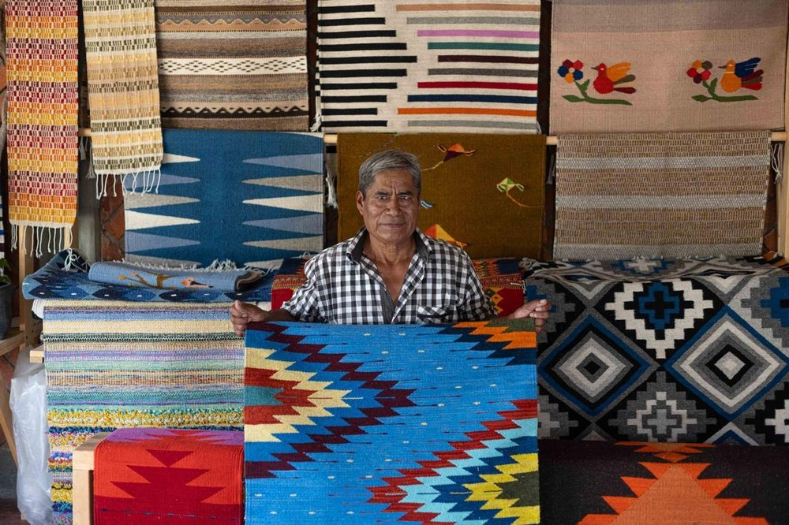
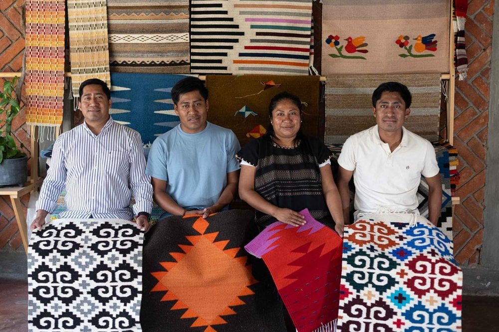

00 · Hilario
00 · Hilario
14 Hilos
de Lana
14 Hilos
de Lana



Escaneaste mi tapete. Soy 14 Hilos de Lana, mi taller aquí en Teotitlán del Valle. El nombre no es casual: 14 por el día en que nací, Hilos por mi nombre, Lana por el material con el que trabajo.
You scanned my rug. I'm 14 Hilos de Lana, my workshop here in Teotitlán del Valle. The name isn't random: 14 for the day I was born, Hilos (threads) for my name, Lana (wool) for the material I work with.
Soy la cuarta generación: de mi bisabuelo a mi abuelo José, de José a mi padre Miguel, y de Miguel a mí. Sigo los diseños raíz de mis ancestros, pero también arriesgo, tejo no solo lana, sino algodón, seda, piel, gamuza e ixtle, materiales que pocos se atreven a dominar.
I'm the fourth generation: from my great-grandfather to my grandfather José, from José to my father Miguel, and from Miguel to me. I follow my ancestors' root designs, but I also take risks, weaving not just wool, but cotton, silk, leather, suede, and ixtle, materials few dare to master.